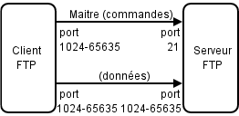
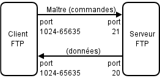

Réseaux & Serveurs
2016-2017
Il existe deux modèles de représentation des communications entre ordinateurs :
Le modèle OSI
et
Le modèle TCP/IP

En tant que travailleurs du web, on va surtout utiliser
Le modèle TCP/IP
- Application
- Transport
- Internet
- Accès réseau
Couche 1:
Accès réseau
Concerne la connexion physique au réseau
Couche 2:
Internet
Concerne l'acheminement des données d'un point à l'autre d'un réseau
Couche 3:
Transport
Concerne la gestion de la fiabilité et de l'ordre des échanges
Le protocole de transport TCP, avec connexion,
s'assure de l'arrivée des données
sans altération, dans l'ordre.
Plus lent qu'UDP mais plus fiable.
Le protocole de transport UDP, sans connexion,
transfère les données sans s'assurer de leur arrivée,
ni de leur ordre.
Plus rapide qu'UDP mais moins fiable.
Couche 4:
Application
Couche contenant la plupart des programmes intéragissant avec le réseau
Attention : on ne parle pas d'application au sens logiciel.
Chaque application sur le réseau utilise
un ou plusieurs port de communication…
…associé à un protocole de transport (TCP ou UDP)
Chaque port utilise un
numéro d'identification
il y a donc
65 536
disponibles par machine
Chaque application est libre d'utiliser l'un ou l'autre
port disponible,
mais il existe une liste de
ports bien connus
traditionnellement associés à une application
- HTTP sur le port 80 (TCP)
- SSH sur le port 22 (TCP)
- DNS sur le port 53 (UDP, parfois TCP)
- FTP sur le port 21 (TCP)
- SMTP sur le port 25 (TCP)
- HTTPS sur le port 443 (TCP)
- MySQL sur le port 3306 (TCP)
La couche application contient de
nombreux programmes et protocoles
SSH
port 22, TCP
permet de se connecter à distance à un ordinateur,
une fois connectés, tous les échanges sont chiffrés
on peut utiliser SSH pour
sécuriser
une autre application, via un tunnel ssh
pour initier une connexion ssh, on peut utiliser
un mot de passe
ou
l'authentifications par clés
POP3
(Post Office Control, version 3)
port 110, TCP ou port 995, TCP (si utilisé avec SSH)
permet de récupérer des emails sur un serveur,
il ne sont généralement plus sur le serveur après la récupération
IMAP
(Interactive Message Access Protocol)
port 143, TCP ou port 993, TCP (si utilisé avec SSL)
permet de consulter des emails sur un serveur,
qui restent donc sur le serveur
SMTP
(Simple Mail Transfer Protocol)
port 25, TCP ou port 465, TCP (si utilisé avec SSL)
permet d'envoyer des emails sur un serveur
la configuration d'un serveur SMTP est de plus en plus complexe
FTP
(File Transfer Protocol)
port 21, TCP (commandes) & port 20, TCP (données)
permet d'envoyer/recevoir/modifier des fichiers sur un serveur
FTP a deux variantes sécurisées :
FTPS (avec SSL/TLS)
SFTP (avec SSH)
FTP suit le modèle
client/serveur
Le mode passif
(le client ouvre la connexion, le serveur choisit le port de transfert de données et le client s'y connecte)
Le mode actif
(le client ouvre la connexion, le serveur choisit le port de transfert de données et se connecte au client)
FTP peut s'utiliser via
la ligne de commande
ou
une interface graphique
faire du FTP en ligne de commande, c'est chiant comme un jour sans pain
HTTP
(HyperText Transfer Protocol)
port 80, TCP ou port 443, TCP (HTTPS, avec SSL/TLS)
permet d'envoyer des requêtes à un serveur
pour consulter les données correspondantes
HTTP fonctionne selon le modèle
client/serveur
le client effectue une
requête
à laquelle le serveur renvoie une
réponse
Une requête HTTP consiste en :
- une URL, adresse de la ressource sur le serveur
- une méthode (method), qui précise le type de la requête
- une série d'en-têtes (headers), qui fournissent des informations annexes sur la requête
- un éventuel paquet de données (body), associées à la requête
Ce à quoi le serveur retourne une réponse, qui consiste en :
- un status, code qui indique l'état de la prise en charge de la requête
- une série d'en-têtes (headers), qui fournissent des informations annexes sur la réponse, dont un type MIME qui spécifie le type de réponse envoyé
- un éventuel paquet de données (body), qui forment la réponse
Il existe toute une série de méthodes dans le protocole HTTP
GET
Demande une ressource
HEAD
Demande uniquement les en-têtes (headers) d'une ressource
POST
Envoie des données au serveur pour créer une nouvelle ressource
À cause de mauvaises implémentations
elle a longtemps été la seule méthode utilisable
pour modifier une ressource,
au détriment de PUT, PATCH et DELETE.
PUT
Permet de remplacer ou ajouter une ressource
PATCH
Permet de faire une modification partielle d'une ressource
DELETE
Permet de supprimer une ressource du serveur
Lors de la réponse d'un serveur à une requête,
un code de statut est envoyé pour indiquer l'état de la réponse
Ce code est un nombre de 3 chiffres
suivi d'un cours message
Les codes 1XX signalent une requête en cours de traitement
Les codes 2XX signalent une requête traitée avec succès
- 200 - OK, requête traitée avec succès
- 201 - Created, requête traitée avec succès et création d'une ressource
- 204 - No Content, requête traitée avec succès mais sans contenu dans la réponse
Les codes 3XX signalent une ressource qui a été déplacée
- 301 - Moved Permanently, ressource déplacée de façon permanente
- 302 - Moved Temporarily, ressource déplacée de façon temporaire
Les codes 4XX signalent une erreur du client
- 400 - Bad Request, requête erronée
- 401 - Unauthorized, une authentification est nécéssaire pour accéder à la ressource
- 403 - Forbidden, l'accès à la ressource est interdit
- 404 - Not Found, ressource introuvable
- 405 - Method Not Allowed, méthode non-autorisée
- 418 - I'm a teapot, le serveur est une théière
Les codes 5XX signalent une erreur du serveur
- 500 - Internal Server Error, erreur interne du serveur
- 502 - Bad Gateway, erreur entre le serveur et l'un des serveurs intermédiaires
- 504 - Gateway Time-out, temps d'attente écoulé entre le serveur et l'un des serveurs intermédiaires